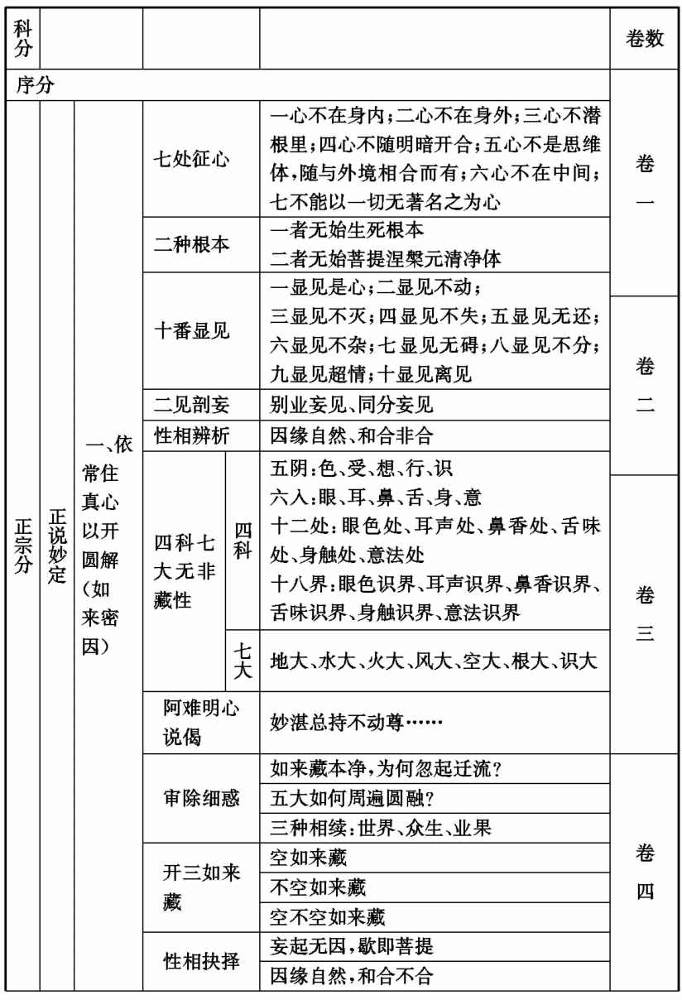
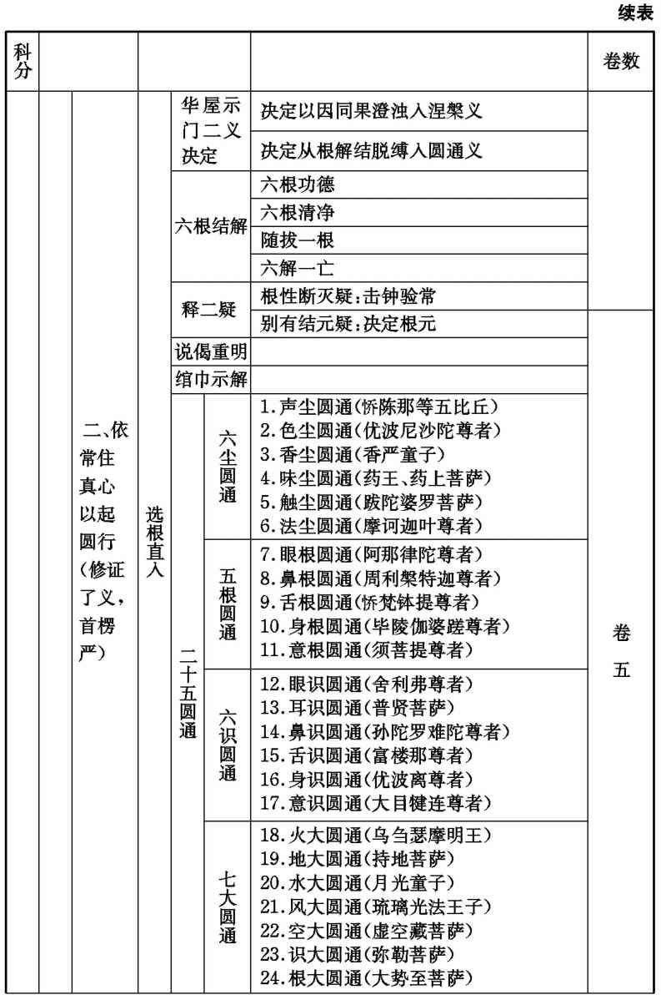
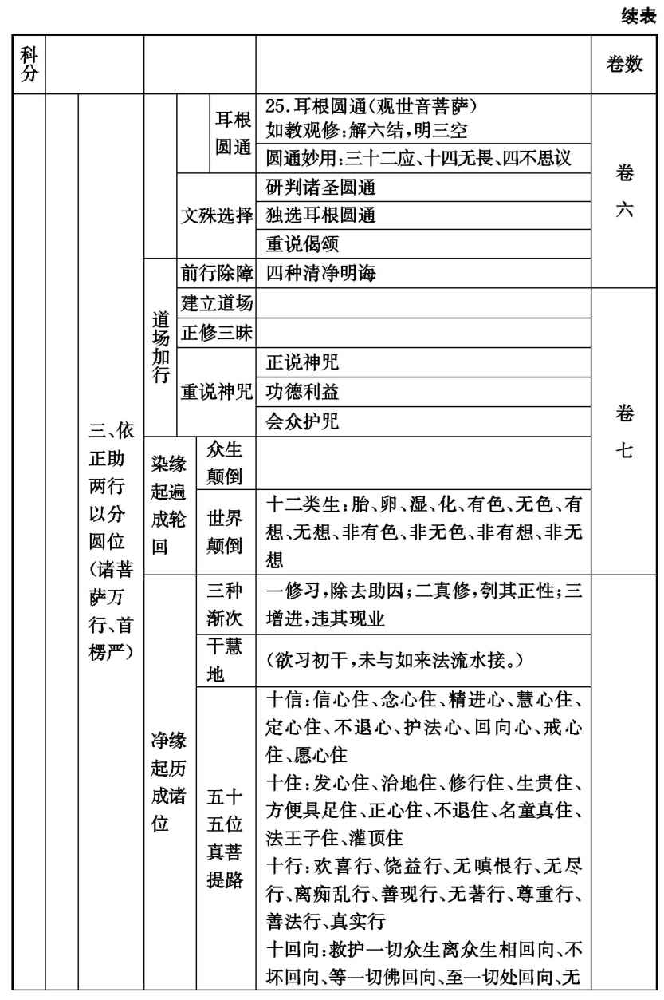
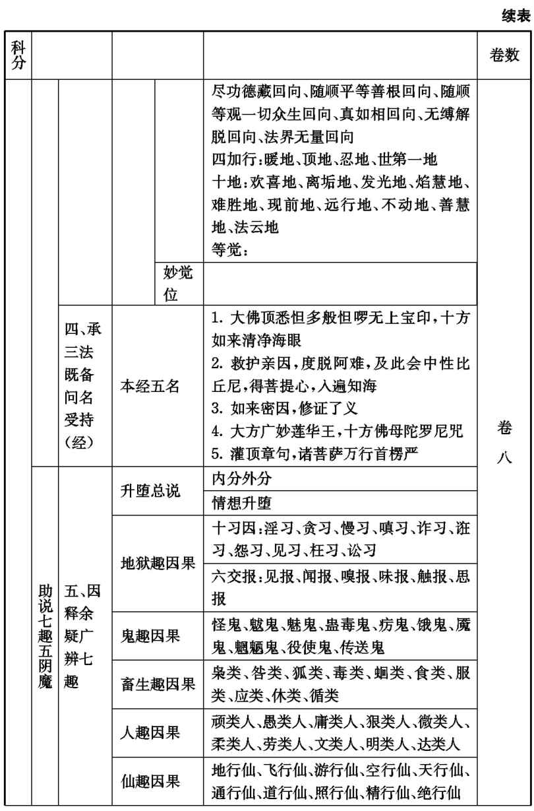
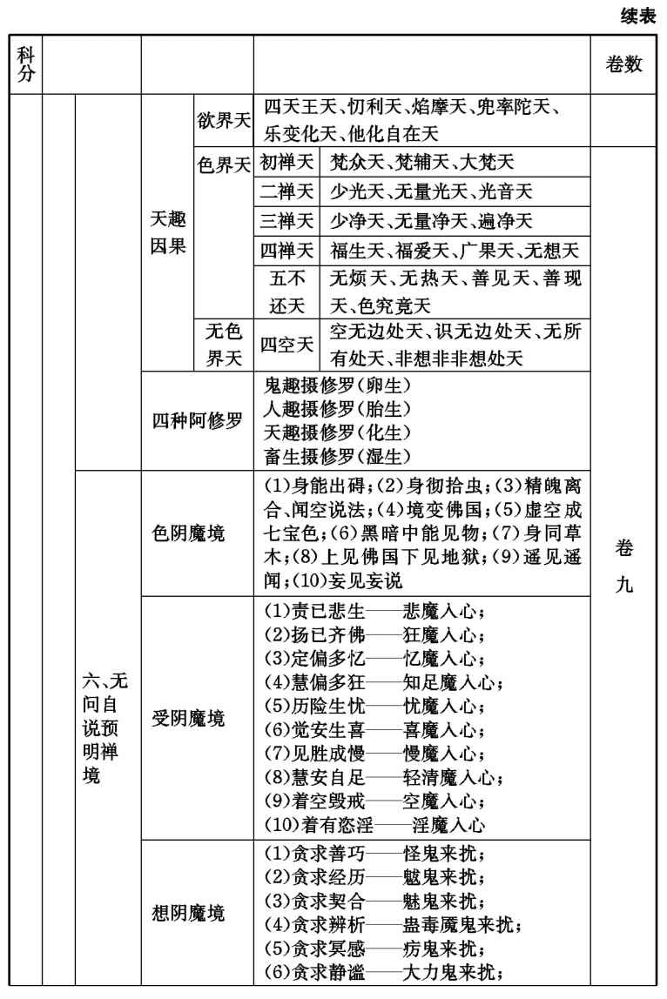
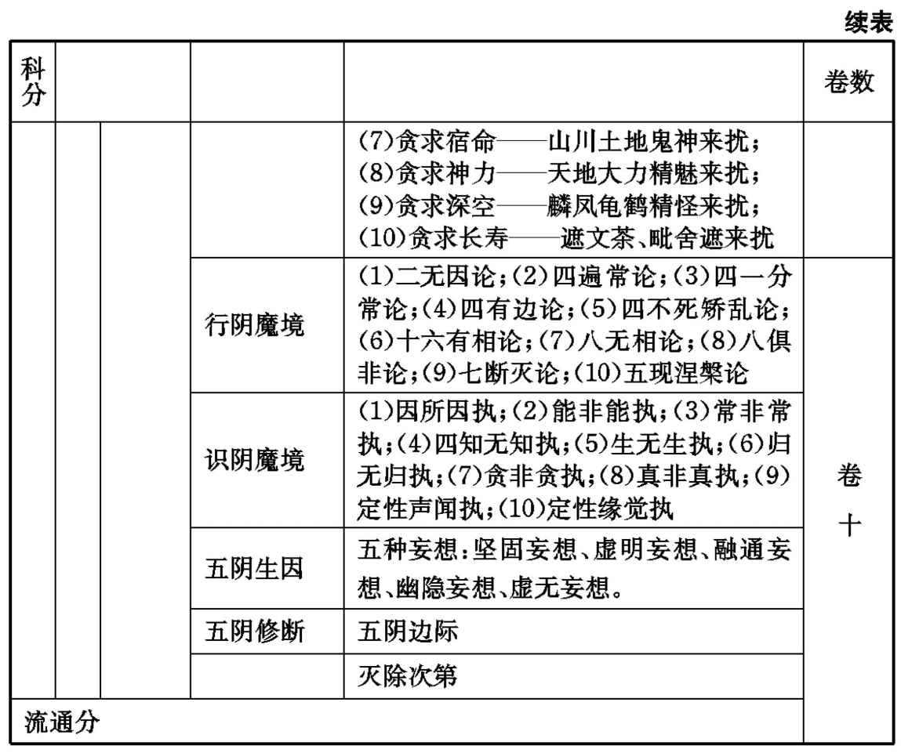

“开悟的《楞严》，成佛的《法华》。”这句禅门话语道出了《楞严经》在中国佛教中的特殊地位和影响。本经自唐代中叶译出后便开始流行，宋代之后更是盛行于僧俗、禅教之间，成为汉传大乘佛教的最核心经典之一，是一部对中国佛教之禅、净、教、律、密都有着广泛而深刻影响的大乘经典。
《楞严经》以禅定修习之见、修、行、果为框架，以首楞严大定为中心，系统讲述了见地抉择、禅修法门、菩萨阶位以及七趣因果和五十阴魔等佛法大义，其禅观体系组织得十分严密巧妙，义理宏深，内容丰富，一经在手，见修齐备，因而被誉为佛教“教观之总纲”，素有“佛教全书”之称；其教理和禅观思想，对宋代之后的中国佛教发展产生了极其深刻的影响。元代天如惟则法师称之为：“《首楞严经》者，诸佛之慧命，众生之达道，教网之宏纲，禅门之要关也。”明代高僧蕅益智旭在《阅藏知津》中称赞：“此经为宗教司南，性相总要，一代法门之精髓，成佛作祖之正印。”
《楞严经》对于修行开悟、明了宇宙人生实相真理具有特别的意义，是能够使人入门悟道的一部书，也是抱本修行直至证果都需要带在身边的一部书。明代憨山德清大师言：“不知《法华》，则不知如来救世之苦心；不知《楞严》，则不知修心迷悟之关键。”由于经中对于破妄显真、破魔显正以及禅定中出现的种种魔事境界作了非常细致的讲述，故本经历来被公认为是一部禅修宝典、破魔大全。
从唐末五代以来，丛林就盛行“楞严法会”，宋元以后，楞严咒逐步成为丛林早课的中心内容，而《楞严经》的流传和讲习也随之更普遍了。
《楞严经》在唐代译出不久，就流传到了日本、韩国。在藏文《甘珠尔》中有由汉译藏的《大佛顶首楞严经》第十品以及《魔鬼第九》两本，实即本经第九、第十两卷，据学者考证，为西藏前弘期（约当唐代）的译品。清乾隆年间，章嘉呼图克图主持，由衮波却将全经重译成藏文，并刊成汉、满、藏、蒙四体合璧的《首楞严经》全帙。
《楞严经》是在唐代中叶于广州制旨寺（今光孝寺）译成汉语，并随后开始流通。唐代著名的佛经目录学家智升将其列入《开元释教录》（编于唐开元十八年［730］，是经录中集大成者，宋藏以下诸藏皆依准之）中。自北宋初年第一部雕刊汉文大藏经《开宝藏》起，直至清朝乾隆年间刊刻的《龙藏》，无一例外地将其列入“正藏”加以流通。
关于《楞严经》的传译情况，早在本经流传之初就有不同说法，由此也引起了后世关于本经的真伪之争。智升在《开元释教录》卷九中记载，罗浮山沙门释怀迪“因游广府，遇一梵僧（原注：未得其名），赍梵经一夹，请共译之，勒成十卷，即《大佛顶万行首楞严经》是也。迪笔受经旨兼缉缀文理。其梵僧传经事毕，莫知所之。有因南使，流经至此”。在同书的卷十二、卷十七则简略记为“大唐循州沙门怀迪共梵僧于广州译，新编入录”、“大唐沙门怀迪于广州译”。这就引起了一些学者的误解。智升在其后专门补充译经史迹的《续古今译经图记》中则有了详细记载：“沙门般剌蜜帝，唐云‘极量’，中印度人也。怀道观方，随缘济度，展转游化，达我支那。乃于广州制旨道场居止。众知博达，祈请亦多。利物为心，敷斯秘赜。以神龙元年（705）龙集乙巳五月己卯朔二十三日辛丑，遂于灌顶部诵出一品《大佛顶如来密因修证了义诸菩萨万行首楞严经》一部十卷。乌苌国沙门弥伽释迦语，菩萨戒弟子前正谏大夫同中书门下平章事清河房融笔受，循州罗浮山南楼寺沙门怀迪证译。其僧传经事毕，泛舶西归。有因南使，流通于此。”这一记载，颇为全面，不但补充了《开元释教录》中情况不明的“梵僧”详情，而且增加了弥迦译语、怀迪证译和房融笔受等译经经过。智升在《续古今译经图记》中关于《楞严经》传译的补充资料，被其后的佛教目录家所采用。在稍后释圆照撰写的《贞元新定释教目录》中，关于《楞严经》的传译完全采用了《续古今译经图记》的说法，而不再沿用《开元释教录》的说法。
关于本经的流通主要有三种说法。一是智升《续古今译经图记》记载：“有因南使，流通于此。”即有南方的使者来奏入朝廷而得以流通。二是宋代长水子璿《首楞严义疏注经》中说：“房融入奏，又遇中宗初嗣，未暇宣布，目录缺书。时禅学者因内道场得本传写，遂流此地。大通（即神秀禅师）在内，亲遇奏经，又写随身，归荆州度门寺。有魏北馆陶沙门慧振搜访灵迹，常慕此经，于度门寺遂遇此本，初得科判。”这是说，房融奏入武则天朝廷，随后唐中宗初登基，故没来得及宣布，恰好神秀禅师在内道场接受供养，看到后传写，带到了荆州度门寺。沙门慧振正在寻找此经，在度门寺遇到此本，就作科判流通。这个“因内道场”传出的说法与智升的记载是一致的。三是宋代赞宁《宋高僧传·惟悫传》记载：天宝末，惟悫于京师“受旧相房公融宅请。未饭之前，宅中出经函云：‘相公在南海知南铨，预其翻经，躬亲笔受《首楞严经》一部，留家供养。今筵中正有十僧，每人可开题一卷。’悫坐居第四，舒经见富楼那问生起义，觉其文婉，其理玄，发愿撰疏，疏通经义”。这是说，惟悫法师在房融家供斋时，遇到了当初房融笔受留家供养的一部《楞严经》，恰好读到了卷四，见其义理玄婉而发愿撰疏，这是注疏《楞严经》之始。《惟悫传》也提到了惟悫作疏的另外一个说法：“一说《楞严经》初是荆州度门寺神秀禅师在内时得本，后因馆陶沙门慧震于度门寺传出，悫遇之，著疏解之。后有弘沇法师者，蜀人也，作义章开释此经，号《资中疏》，其中亦引震法师义例。”这里说惟悫法师作注疏的起因是遇到了慧震（即慧振）法师从度门寺传出的《楞严经》，而且还提到蜀中弘沇法师作《资中疏》也因此本。《楞严经》流通的三种说法，其实是一致的，奏入朝廷而由内道场传出也好，留家供养而传出也好，都是房融参加译经笔受本这同一来源。
由上述可知，虽然本经的翻译和流通在早期流传之初有不同说法，但从智升《续古今译经图记》之后，观点趋向一致，并不存在实质性的不同观点。因此，真正引发后世关于《楞严经》真伪之争的焦点更在文义，而不在传译。但由于《楞严经》在见地抉择和禅修法门方面的非凡价值，这些争论并未影响僧俗两界对此经的喜爱和崇信。到了近代，可能是受疑古风气的影响，一些学者重启《楞严经》真伪之争，如梁启超、吕澂等人。梁氏仅凭文中“十种仙”等片语即断语经伪，十分轻率，未免有出风头之嫌疑。而以吕澂为代表的学宗唯识者，主要还是对以《楞严经》、《起信论》为代表的汉传佛教的禅观和义理有看法，或者以为《楞严经》是一种真常唯心论的学说，将之硬归为是与印度外道“梵我”的学理相同，并重新从翻译和流通的史实上、或个别文句上大做文章，以便得出《楞严经》是伪造的结论来。其深层次背景则是试图以印度佛教之正统性来否定汉传佛教之合法性，与日本学者试图以小乘经典来得出“大乘非佛说”的结论如出一辙。但无论从论证方法，还是分析结论，都难于尽信，谁也拿不出真凭实据，不过是各执己见而已。更有少数研究者，以盛唐时期文学发达、佛学兴盛为理由，直接说《楞严经》是房融所造，此种说法就如同说有一位文学家伪造了一部最高深的数学经典一样，颇为可笑，令人难以置信。以《楞严经》义理之缜密、定境之高深、辨魔之细致，乃是大乘菩萨地之甚深境界，绝非一个尚不识初禅、二禅，也未得初果、二果，更遑论菩萨地境界的文学之士所能想、所能知，读懂尚难，更何谈撰造！要之，《楞严经》论义多为直接就禅观之见修而说，故颇有不同于他经的特别说法，诸如七大、四加行、十仙趣等，加之兼有密部内容，破邪见、破邪魔甚力，其所立名相、义理以及论证方式自难以中观或唯识的学说来衡量。近代学者据中观或唯识义而排《楞严》、非《起信》，间生诬谤，或不免偏执之嫌。
《楞严经》自唐中叶译出以来，备受各宗的推崇，历代注疏甚多，其数量之大，大概只有《金刚经》、《法华经》等少数经典可比。早期的唐代注疏三家，早已失传。现存注疏都是宋代以后的著作，大半是属于贤首、天台、禅宗三家。明末清初钱谦益《楞严经疏解蒙钞》卷一“古今疏解品目”列举自唐至明历代注疏55家，并对其中三十余种作了简略评述，同时判别注家之学派分属。在《蒙钞》的基础上，清代达天通理法师《楞严经指掌疏》中列举历代注疏增至68家（其中唐4家、宋20家、元4家、明34家、清6家），也作了简评，时间下限为清乾隆中期。近代以来，关于《楞严经》注疏和讲义不下十余种。《大正藏》、《卍续藏经》收录自宋代至清末的《楞严经》注疏56种。兹列举其中主要者如下（评语多依据《楞严经指掌疏》）：
唐代：
崇福寺惟悫法师疏（已佚。“崇福”有本作“兴福”。惟悫于唐至德初年得房融家笔授经函，发愿撰疏，勒成三卷。为此经疏解之祖）。
魏北馆陶沙门慧振科判（已佚。“慧振”或作“慧震”。为此经科判之祖）。
蜀资中弘沇法师疏（已佚。用天台宗三观义解此经之始）。
长庆道 （yǎn）师《说文》（ 师为赵州禅师法嗣，《说文》别标一宗，为用禅宗话语解经之始）。
宋代：
永明延寿禅师《宗镜录》引释（禅师会三宗学者，撰《宗镜录》百卷，折衷法门，会归心要，多取证于《楞严》。所引古释，即悫、振、沇三家之说）。
携李洪敏法师《证真钞》（已佚，略见于《楞严义海》诸录）。
长水子璿《义疏》（法师传贤首教观，尤精于《楞严》，时称“楞严大师”。依贤首五教及慧振科判，采集悫、沇、敏、节诸家之解，释通此经，奉为准绳，在后世《楞严经》注疏中最为著称，被誉为“百代心宗之祖”）。
孤山智圆《疏》并《谷响钞》（用天台宗三止三观解释此经。间有未明，又撰《谷响钞》释疏）。
吴兴仁岳《集解》并《熏闻记》（岳师力扶孤山，张皇台观，集崇福以下诸解）。
北峰宗印《释题》（依天台宗观点，总括一经大义，解释名题）。
桐州法师怀坦（近本讹为思坦）《集注》（敷演台观，辅翼圆、岳，开张本宗而已）。
王安石《定林疏解》（文公罢相，归老钟山之定林，著《首楞严疏解》。略诸师之详，而详诸师之略）。
温陵戒环《要解》（戒环法师一生掩关，深悟玄理，其解释观点精到，不泥执一家，识见有大过人者）。
元代：
天如惟则《会解》（遵其师中峰明本国师之嘱而为本经作集解。列唐宋九师，附己为十，故为十家会解。而不录其师中峰明本之解，以为禅有禅解，经有经义，不欲混为一门，以长后人狂解）。
明代：
携李真界《纂注》（《蒙钞》谓其为《会解》支流）。
憨山德清《悬镜》并《通议》（憨山大师深探楞严教观，后居东海那罗延窟，枯坐三年，一夕海湛空澄，发悟楞严观境，遂信笔述《悬镜》一卷，词富理圆，包罗观网。晚年在南岳应门人之请又著《通议》十卷以释全经）。
紫柏真可《解》（师每言“此方真教体，清净在音闻”，约文拈义，时有提唱，剪截葛藤，超然于笺注之表，片文只字，学者珍之。此则偶见笔札者也）。
莲池袾宏《摸象记》（大师专修净业，不居禅讲。因见时师注疏，辨驳太甚，故自制《摸象记》，意言彼此皆如盲摸象，不必定执己是而他非也）。
交光真鉴《正脉》（师自叙从《楞严》发悟，故注本经。扫拂台观，排抵《会解》，流传幽朔，惊动江左。是明代《楞严经》注疏中影响最大者。清代及近代的《楞严经》注疏受《正脉》影响颇深）。
幽溪传灯《玄义》并《圆通疏》（《圆通疏》力扶台宗，专依《会解》，与《正脉》函矢相攻，未免伤于袒护）。
蕅益智旭《玄义》并《文句》（此师律仪清肃，心眼孤明。所著《玄义》并《文句》与长水、吴江宗旨印合）。
庐陵曾凤仪《楞严宗通》（遍采宗门公案，配释经文）。
二楞通润《合辙》（语句尖新，世多乐习。借禅门棒喝之谈，资讲筵排演之口，杂拈公案，多引机缘，接引宗徒，随喜教诲，于是经不无少补）。
钱谦益《疏解蒙钞》（盖谓取诸家疏解而钞之，上取崇福以下诸师五十余家，而以长水为司南。仍复网罗多家，衷其得失，搜剔之心良苦，是《楞严经》集解中的佼佼者。一册在手，诸家备览，为后世研《楞严》提供莫大方便）。
丹霞函昰（xià）《直指》（以禅门见地解《楞严》。多提持向上，启发悟门）。
陆西星《说约》并《述旨》（陆为明清际著名的道教内丹家，开内丹东派，晚年参禅，注《楞严》、《楞伽》，俨然会通三教之意也）。
清代：
巴蜀居士刘道开《楞严贯摄》（居士自言其注疏观点《正脉》取六、《合辙》取四，实则主要以《正脉》为主，是辑录《正脉》文句而串讲《楞严》之佳作）。
慈云续法《灌顶疏》（此经自流传以来，译释咒语则为第一人）。
法界溥畹《宝镜》（二十年玩味，午夜参究，遍搜诸注精英，直探本经之旨，然取《正脉》文意为多）。
达天通理《指掌疏》并《悬示》（师为清代最为著名的注经法师。本注遍采诸家而多有新见，是清代注经中的佼佼者）。
千华戒润《贯珠》（以全部经文贯珠于释文之中以便初学，对文句疏解极有益）。
近代：
太虚《摄论》并《研究》（闭关三年之心得，《楞严》一悟之亲证。于经文玄义多有发明）。
谛闲《大佛顶经序指味疏》（一生常讲《楞严》，取天如《会解序文》而疏释之）。
圆瑛《楞严经讲义》（积毕生心血而为疏解，近代以来号为“《楞严》独步”。折衷诸家而多依《正脉》，兼取《贯摄》、《宝镜》、《指掌》等，于文句消解极有益）。
成观《楞严经义贯》（戒润《贯珠》之后的又一个现代贯珠解，即以原经文贯珠于白话译文中，于消文颇有益）。
《楞严经》全称《大佛顶如来密因修证了义诸菩萨万行首楞严经》，又名《中印度那烂陀大道场经》，于“灌顶部”录出别行，属于密部。然本经虽属密部，其对汉传佛教的影响主要还在显教。按照古来注家的观点，此经题即代表了本经的宗旨和始终因果的玄妙深义。
“大佛顶”，指心自性之理体，即本经所言“常住真心、性净明体”，也即是如来藏心。“佛顶”是佛身三十二相中之无见顶相，喻指此“如来藏心”为无上至妙最胜之顶法。由此心体，含吐十界，弥纶万有，“随缘不变，融四科而惟是本真；不变随缘，妙七大而各周法界”（达天通理《指掌疏悬示》）。经中言：“一切众生无始以来生死相续，皆由不知常住真心、性净明体，用诸妄想。此想不真，故有轮转。”谓一切众生都有“常住真心、性净明体”，但因不明本有真心，用诸妄想，故流转生死；若能觉悟自心，返妄归真，即可成就无上菩提。因此，众生的流转与还灭，皆以“常住真心、性净明体”为根本，迷则迷此，悟则悟此，乃至世界相续、业果相续，也是如此。“大佛顶”三字，全示本经正体，所喻之“常住真心、性净明体”乃是本经的根本宗旨所在。在密部的诠释中，“大佛顶”则以佛顶出无为心佛所宣说的“悉怛多般怛啰无上宝印”为代表，即佛顶化佛所宣说的楞严咒。
又就“大佛顶”之理体而言，即是三德秘藏，为一心三大之异称。“大”即法身，周遍法界，含摄森罗，竖穷三际，横亘十方，超言思之表，绝朕兆之机，无可得以称，强名之为“大”，即体大；“佛”即般若，觉照为义，本无垢染及诸妄想，自性清净，本来觉照，故名为“佛”，即用大；“顶”即解脱，一门超出，至尊无上，故称为“顶”，即相大。此三大皆归一心，即本如来藏妙真如性，亦即是当人常住真心、性净明体。
“如来密因、修证了义、诸菩萨万行、首楞严”，即因“常住真心、性净明体”之圆理，谓之“如来密因”；起行圆修，举二十五圆通法门，拣选耳根圆通为最初方便，进而建立坛场轨则，专修楞严咒，谓之“修证了义”；由此断惑证真，历五十五位菩萨行阶位之圆行，谓之“诸菩萨万行”；然始终修证，总归首楞严大定。故“如来密因、修证了义、诸菩萨万行、首楞严”即说明了本经始终修证之总纲。《指掌疏》云：“在迷为如来密因，在悟为修证了义；在因为菩萨万行，在果为首楞严王。一经要妙，不出此宗。”（《玄义》卷上）蕅益智旭《楞严经玄义》云：“依此成自行因果，故名如来密因、修证了义；即此为化他因果，故名诸菩萨万行、首楞严。”（《玄义》卷上）《楞严经》中言：“有三摩提，名大佛顶首楞严王，具足万行，十方如来一门超出妙庄严路。”虽然真心本然、性净圆明，而迷者不觉，故须修如幻三摩提禅定以返本归元，故经中大开修证之门，曲示圆通之路，抉择始终迷悟真妄因果，建立楞严大定法门，历菩萨万行而断惑证真；虽多方抉择，无非显示见性之源，广演楞严大定。故本经修证总纲实以圆通妙定为始终，显说以耳根圆通法门为方便，密说则为楞严大定。
“如来密因”，指诸佛之因心，觉证之真因，即是如来藏妙真如心。此心为四科七大的根本实性，具足三如来藏全体大用，不仅是因性，也即是果性。经中言众生迷悟有二种根本：“一者无始生死根本，则汝今者与诸众生用攀缘心为自性者”，此是迷本；“二者无始菩提涅槃、元清净体”，此是悟本，即是如来藏心，也即是“如来密因”。文中从卷一阿难请定开始，至卷四“身意轻安，得未曾有”，从破妄和显真两个方面详细抉择。
“修证了义”，观、行为“修”，解、悟为“证”，而“了义”指圆修。《正脉》解释“了义”有二义：一者，用根不用识。盖用识，则以生灭为本修因，如蒸沙做饭，毕竟不成常住菩提，故非了义；用根，则以不生灭性为因地心，如依金作器，决定能成无上菩提，故为了义。又依此特选耳根圆通法门。二者，从性起修，因赅果海。盖依密因无修证的本觉果海中，不妨幻修幻证，修而无修，非事相之染修，证而无证，故称“了义”。本经又列密部修证，安立道场，顶光说咒，建立楞严大定法门，也称“了义”。文中自卷四后半请华屋之门开始，直至卷七前半楞严咒功德，诸天神等护咒。
“诸菩萨万行”，指分证诸圣五十五菩萨位，即十信、十住、十行、十回向、四加行、十地以至等觉，历位所修，行应无量。文中自卷七后半阿难请说修行阶位，至卷八结经名前。
“首楞严”，即大定总名，能圆统诸定，故文中又称“首楞严王”。《涅槃经》中佛自释“首楞严”意为“一切事究竟坚固”，即是如来藏心本觉妙定，也称为“佛性”、“般若”、“狮子吼”等。又名“金刚三昧”，也是究竟坚固之义。又译“健相三昧”，能究竟诸法实相，所住至处，无能坏伏。蕅益智旭结合经文解释为，“言‘一切事’者，所谓五阴六入十二处十八界及七大也；言‘毕竟坚固’者，所谓皆非因缘、非自然、非和合、非不和合，本如来藏常住妙明、不动周圆、妙真如性，皆悉清净本然，周遍法界也。”《正脉》解释“首楞严”为三义：一、此是妙定，以自性本具，天然不动，不假修成，纵在迷位动中，其体本然。二、此是圆定，此定不独取自心不动，乃统万法万事，皆悉本来不动。三、此是大定，此定纵在迷位尚本不曾动摇，开解起行之后直至历位成佛，终无退出。憨山德清《通议》则以“一心三观”解释“首楞严”，谓此大定之体，总之而为“一心”，别之而为“三观”。一心，即如来藏清净真心。依此心体有三种名：一空如来藏，二不空如来藏，三空不空如来藏。此心体本来清净，一法不立，是故名空；具有恒沙称性功德，故名不空；即此二体，但是一心，故名空不空。依此义故建立三观，由此三观还证一心，故称大定之总名。自阿难请问三观，佛答直指一心，全经所演修证因果始终，无非令其成此楞严大定。
蕅益大师言：“经中取大佛顶性德及首楞严修德，合成三昧之名，总显全性起修、全修在性之妙，而以具足万行二句，别显三昧功能旨趣。”
本经的科判，诸家大同小异。如下表：
《楞严经》科判表






关于各卷内容，见各卷译文前的提要，此不赘言。
又，明代蕅益大师《楞严经玄义》对于本经的经题和全文大意有一个文辞优美的简短总结，可与上述科判合参：
【解释经题】大佛顶者，即心自性之理体也。随缘不变，融四科而惟是本真；不变随缘，妙七大而各周法界。喻冰水之始终，惟是湿性；譬太虚之群相，不拒发挥。十界一心，事造与理具遍摄遍含；一境三谛，横辨与竖历非并非别。依此成自行因果，故名如来密因修证了义；即此为化他因果，故名诸菩萨万行首楞严。
【全经提要】因果妙修，全归性具；化他力用，宁隔体宗。二本明而金沙立辨，二义决而华屋有门。圆通既陈，信方便之无非圣性；圆根既选，知耳门之独利此方。明诲殷勤，戒乘俱急；道场安立，显密互资。无渐次而立渐次，能历之正助圆彰；即位次而非位次，所历之转依如幻。精研七趣，只因迷此大佛顶理而妄受轮回，谁达空华无别体；详辨五魔，本求悟此大佛顶理而中途成惑，那知妄想作根原。
【结赞本经】是诚一代时教之精髓，成佛作祖之秘要，无上圆顿之旨归，三根普被之方便，超权小之殊胜法门，摧魔外之实相正印也。
本白话译注采用的经文底本是近代圆瑛法师《楞严经讲义》所用底本，又参考了长水子璿《首楞严义疏注经》所用底本，字句不同处又参考了《中华大藏经》本（底本为《赵城金藏》本）、《房山石经》石碑拓本、《高丽大藏经》初雕本、《永乐北藏》本、《龙藏》本等。
《楞严经》文辞优美，议论精妙，具有很高的文学价值，故有所谓“自从一读楞严后，不看人间糟粕书”之说。可想而知，本经的白话翻译，难度是极大的。本白话翻译在经文文义及玄义上主要参考了钱谦益集解《宗镜录》、长水疏、孤山疏、温陵解、惟则疏等宋元多家注疏之《楞严经疏解蒙钞》，以及晚明莲池大师、蕅益大师、憨山大师的注疏和玄义；而在消文上，则主要参考了长水疏、《正脉》、《贯摄》、《宝镜疏》、《指掌疏》、《楞严经讲义》、《楞严经义贯》等。白话译文是在导师赖永海先生和杨维中教授合译的《楞严经译注》的基础上进行的。
与其他经有所不同的是，《楞严经》译文特别古雅简练，因此本经的消文历代都是难点，虽然注疏甚多，但许多文义依然难解。明代《楞严经正脉》之所以很快流行，也与其消文比较细致有关，其后又有《贯摄》、《宝镜疏》、《指掌疏》以及《贯珠》等，依据《正脉》，折中多家，把消文工作推进一步。近代圆瑛法师《楞严经讲义》则对本经作了最细致的消文，逐句讲解，《讲义》主要依据《正脉》、《贯摄》、《宝镜疏》、《指掌疏》等，又参考多家，是历代以来《楞严经》文句消解最细致的，所以，面世以来即大受欢迎。近年又有成观法师作《楞严经义贯》（2006年出版），发愿把本经文句作彻底之疏解，“俾令大家对这部稀有的宝典，于每一字、每一句、乃至每一行，都能得到较清楚及确定、满意的理解；也就是作者发心志在廓清所有的盲点与疑惑不清之处，普令皆解如来真实义”，因此，《义贯》对于本经消文无疑有很大帮助。虽然如此，由于本经文义难度所致，在此次白话翻译中依然有许多文句要参酌多家，反复玩味，最后才落笔，其间艰辛，不可以语言道也。
以前笔者认为把文言佛经转译为现代汉语白话文，有两种思路：一是把白话本看作是对原文的解释性翻译，尽可能在文义上使原文清楚明白；二是把白话本也看作一种独立的译本，只是为了随顺读者的阅读习惯而把文言转为白话，并不刻意追求把原文文义说得更清楚一些，故在文句、文义、文气上都尽可能与原文一致，保持一个简洁优美的文本。两种翻译形式各有千秋，但总的来说笔者颇倾向于后一种。然而此次《楞严经》的白话译文却需要按照第一种翻译形式，即是一种针对原文的解释性翻译，需要增加许多解释性的文句，这自然是由于本经文句难度所决定的。虽然如此，本白话译文的翻译原则还是忠实表达原文，使得增加解释的文句能够与相应的原文对应，而避免出现译文能够看懂，却无法与原文对得上的问题。
又，字词注释主要参考了《中华佛教百科全书》、《佛光大辞典》、《佛学大辞典》等，注音主要参考了《汉语大词典》、《辞海》、《一切经音义》等，有关参考文献见书末，在此一并致谢。